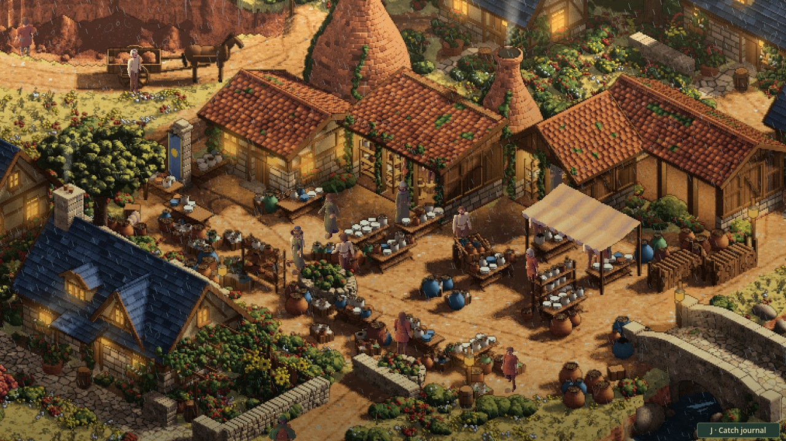
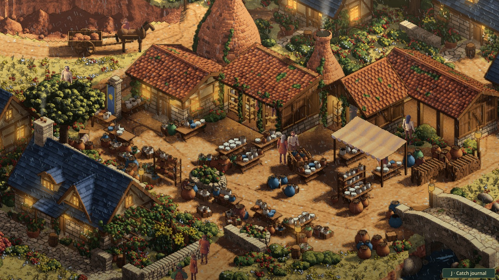
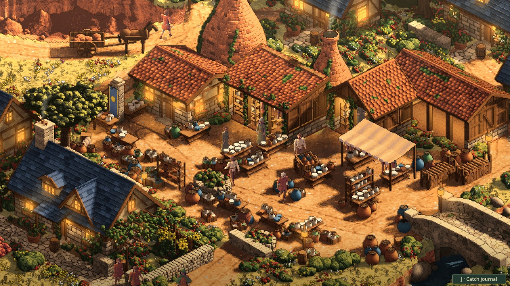

Taking cover
24 October 2026 · Day 33
Heavy rain is beginning to change the working day in Sprawl. Townsfolk leave exposed jobs, walk through real doorways into cover, and return to the activity they interrupted once the weather clears.
The street notices the rain
The recent weather work gave the lanes falling rain, wet paving and shelter beneath roofs. People still carried on as though none of it were happening. A potter could stand in a downpour while the traveller beside them watched the rain gather around their feet.
This feature gives that weather a consequence. Light rain leaves ordinary work running. A downpour makes exposed people look for a roof. They react at different moments, walk into the town's existing rooms and open-front sheds, then wait for a sustained break in the weather. People already working under cover have no reason to leave their stations.

A door has to be reachable
A roof nearby on the picture is not enough. A waiting place needs a usable floor and a route from the person's current position. The route respects the town's walls, stairs, furniture, water and changes in height. An occupied carriage arch is not automatically a room at street level.
People reserve separate places to stand, rather than all choosing the centre of the same room. If no reachable space is available, they remain in the world and try again after a pause. A failed search never moves someone through a wall.
The weather comes from the same sky that drives the visible town rain. This first version uses the existing weather controls in supported traced towns. A connected seasonal climate and animal shelter behaviour remain separate work.

Putting work down
Taking cover is an interruption. Someone walking between wares keeps their place in that walk. A timber worker puts down the activity clock that drives their work. When the sky has stayed clear long enough, they walk back to the position where the interruption began and resume from there.
That distinction exposed details worth fixing during implementation. A worker moving away from a station must not leave an invisible collision post behind. A saw needs to rest when its sawyers leave. A person's identity must survive the camera loading another piece of town, including people whose current shelter lies beyond the window containing their original workplace.
The implementation now keeps those temporary lives separate from the pictures used to draw the town. Replacing a resident picture restores the same person, position and interrupted activity. Residents outside the active area keep their temporary state suspended until they return to view.
Watching it happen
The first native review changed the sky through the game's actual weather key, observed a person leave work and followed the walk into a real roofed space. Clearing the same sky started the journey back. The final review also checks that movement stays continuous through the doorway and that refreshing the resident picture preserves the person.
The completed native checks pass in Kilnworth and Woodhurst. They follow actual people through the downpour, shelter and return, using the normal weather key. Separate model checks cover routes over a ramp, blocked doors, water, occupied waiting places and renewed rain during a return journey.

This is ready for review in the current traced towns. The older default market population and wildlife still need their own weather response. Crossing walkers do not yet negotiate around each other, and people currently use reachable rooms without a household access policy. Those are useful next questions for a town whose inhabitants now notice the sky.
When the weather affects a livelihood
The next design step goes beyond finding a roof. A short storm should pause exposed work. A late storm might persuade an outdoor trader to pack up for the day, while a dry indoor shop carries on. Returning means more than the rain stopping: the keeper needs enough useful time to walk back, set up and serve customers.
Repeated bad days could then mean missed sales, delayed production, damaged stock and pressure on wages. Those consequences need to come from the real business, its supplies and its contracts. They should not be a flat fine taken from everyone's purse because it rained.
That creates a reason for a town to seek weather magic. A potter whose drying yard has been unusable for days might ask for a safe working window. Neighbours with similar losses could contribute to a commission, or appeal for unpaid help. A traveller could protect the yard, find a capable mage, improve drainage or leave the town to seek its own solution. The world would be responding to what happened rather than waiting for a prewritten quest.
This is the planned economic and social follow-up. The current shelter feature provides the visible interruption and return; connecting those people to business accounts, a shared saved day and causally funded petitions is further work.